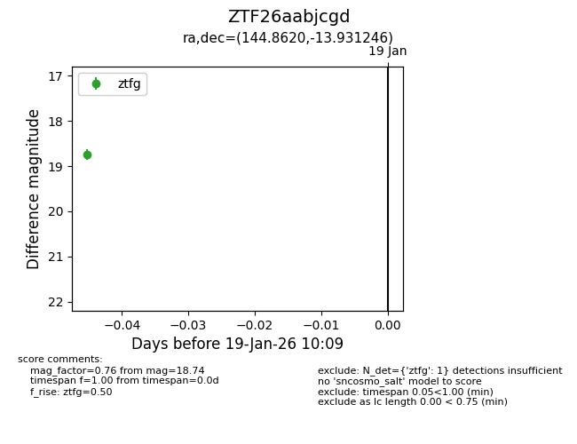
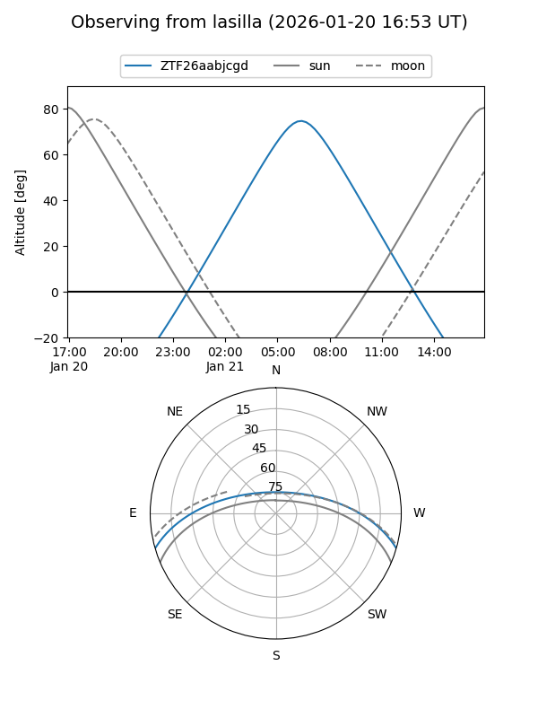

ZTF26aabjcgd
Target ZTF26aabjcgd at 2026-01-19 10:11
Aliases and brokers:
FINK: link
Lasair: link
ALeRCE: link
alt names
ZTF26aabjcgd (ztf,fink_ztf)
Coordinates:
equatorial (ra, dec) = 144.8620,-13.93125
equatorial (HMS+DMS) = 09:39:26.87,-13:55:52.48
galactic (l, b) = (248.2184,+27.92061)
Flags:
Photometry:
last ztfg=18.74
1 ztfg detections
Lightcurve

Visibility


Additional plots